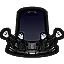

微星投影仪
似乎显现出来的……并不是投影？


- 微星投影仪（astgenne_projector）是一种仅【星源】可制作的建筑。
- 说明-基础特性：
①是拥有上下2格储物空间的容器，左边1格只能放入【唤星者魔杖】【唤月者魔杖】。右边1格只能放入【启迪碎片】。
②只放入魔杖时，其获得自然耐久回复，效率为+1%/8分钟。在同时放入魔杖和启迪碎片时，其耐久回复效率提高至+1%/4分钟。
③置入其中的【唤星者魔杖】【唤月者魔杖】耐久回复至100%时，会立刻消耗5%耐久，在投影仪中心位置生成对应的矮星/极光。（持续时间不同于原版，皆变为20分钟）
微星投影仪
astgenne_projector

分类：建筑/功能
解锁方式：“真理”
制作材料：
①约束静电*1
②带孔月岩*1
③D32钢*1
④生物数据*16